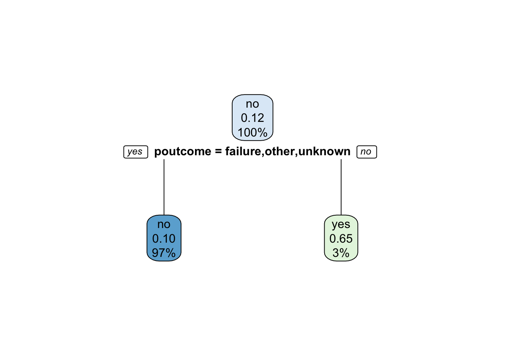

The purpose of this report is to fit and compare classification tree and random forest models that predict whether a bank client subscribes to a term deposit, then select the best model for use in an API.
Introduction
In this project we build on our exploratory analysis from Project 2 of the ‘Banking Dataset - Marketing Targets’ from Kaggle. The data come from a Portuguese bank’s marketing campaign, in which clients were called and offered a term deposit. We define our response variable as y, which is whether the client subscribed to the term deposit (yes or no). Since y is categorical, this is a classification problem.
Our goal is to predict whether a client will subscribe. Using the tidymodels framework, we fit a classification tree and a random forest. Each model is tuned with 5-fold cross-validation on a training set. We then compare the best version of each on a test set, and fit the winner to the entire data set. The API uses this final model to make predictions.
We use six predictors; three numeric and three categorical. These are the following:
age: client’s age (years)
balance: client’s average yearly account balance (euros)
campaign: the number of contacts made with the client during this campaign
housing: if the client has a housing loan
contact: method of contact (cellular, telephone, or unknown)
poutcome: prior outcome of previous campaign (success, failure, other, or unknown)
These predictors were chosen because they describe the client and their history with the bank, as well as findings from Project 2. Clients who were contacted in a previous campaign were more likely to subscribe, and subscribers tended to have higher balances and fewer contacts.
We do not include duration, or the length of the last call. While duration was strongly related to subscription in Project 2, this information doesn’t aid in prediction because it’s only known after the fact. We also exclude month, or the month of the last contact. Despite observing monthly patterns in Project 2, there are many potential confounding variables not analyzed that could inhibit future predictions.
Data
We begin by reading in the data. In Project 2 we found that test.csv was a duplicate subset of train.csv, so here we use only train.csv, which contains all 45,211 unique clients. We keep only our response and six chosen predictors, and convert the character columns to factors so the models treat them as categories.
# A tibble: 45,211 × 7
y age balance campaign housing contact poutcome
<fct> <dbl> <dbl> <dbl> <fct> <fct> <fct>
1 no 58 2143 1 yes unknown unknown
2 no 44 29 1 yes unknown unknown
3 no 33 2 1 yes unknown unknown
4 no 47 1506 1 yes unknown unknown
5 no 33 1 1 no unknown unknown
6 no 35 231 1 yes unknown unknown
7 no 28 447 1 yes unknown unknown
8 no 42 2 1 yes unknown unknown
9 no 58 121 1 yes unknown unknown
10 no 43 593 1 yes unknown unknown
# ℹ 45,201 more rows
# Subscription countsbank |>count(y) |>mutate(pct =round(100* n /sum(n), 1))
# A tibble: 2 × 3
y n pct
<fct> <int> <dbl>
1 no 39922 88.3
2 yes 5289 11.7
The response is not balanced because only 11.7% of clients subscribed. This affects two of our choices: how we split the data and which metric to compare models.
Splitting the Data
We split the data into a training set (70%) and a test set (30%). We stratify on y so that both sets have roughly the same 11.7% subscription rate. Then we divide the training set into 5 folds for cross-validation, which we use to tune each model. The test set is sidelined until we compare our final models.
# Split data 70/30, keeping same proportion of "yes" in each setset.seed(558)bank_split <-initial_split(bank, prop =0.7, strata = y)bank_train <-training(bank_split)bank_test <-testing(bank_split)bank_split
<Training/Testing/Total>
<31647/13564/45211>
# 5 CV folds from training databank_folds <-vfold_cv(bank_train, v =5)
The recipe: y is the response, the six variables are predictors.
# Recipe: y predicted by all 6 predictorsbank_rec <-recipe(y ~ ., data = bank_train)bank_rec
Log loss is our chosen metric for selecting models. Since our response is imbalanced, accuracy on its own can be misleading because a model that predicts “no” for every client is about 88% accurate without being useful. Log loss evaluates the predicted probabilities rather than just the predicted class. It rewards a model for giving a high probability to the outcome that actually happened, and penalizes a model that is confidently wrong. Lower log loss is desirable. In this case, a useful model should do better than giving every client the same 11.7% chance of subscribing, which ignores the predictors. We also report accuracy because it is easy to interpret, but we don’t use it to choose models.
# Metrics to evaluate models: log loss and accuracybank_metrics <-metric_set(mn_log_loss, accuracy)
Classification Tree
A classification tree predicts a categorical response by dividing the predictor space into regions and making the same prediction for every observation in a region. The tree is built from the top down. At each step, it searches across every predictor and every possible split point (e.g., age < 35) and chooses the single split that best separates the classes. It then repeats this process within each of the two resulting groups, and so on (i.e. recursive binary splitting). Each split doesn’t consider future splits. The best split makes each group as close to one class as possible (measured with the Gini index).
The final groups are called terminal nodes, or leaves. We make a prediction for a new client by using their information to trace splits down the tree until hitting a leaf. The new client’s predicted probability of subscribing is the proportion of training clients in that leaf who also subscribed. The predicted class is the majority class in the leaf.
A potential pitfall of this method is to split too much and fit the training data too well. This is a problem because it will be fitting noise and end up with worse predictive power for new data. To prevent this, we grow a large tree and then prune it back using the cost_complexity parameter. This parameter adds a penalty for each additional leaf, so a split is only kept if it improves the fit by enough to make up for the extra complexity. Small values allow large, complex trees, while large values produce small, simple trees. Thus, cost_complexity is used as a tuning parameter to inform us about how much pruning is best for our classification tree.
There are many advantages to consider with classification trees. They excel in visualizing the process, handling numeric and categorical predictors, and automatically accounting for predictor interactions. Their main limitation is high variance. A small change in the data can lead to a very different tree, which can hurt prediction.
We now set up our tree using cost_complexity for tuning and combine it with our recipe in a workflow. For the grid, we try 10 values of cost_complexity that are spread evenly on a log scale (very little pruning to heavy pruning).
# Classification tree model; only tune cost-complexity parametertree_mod <-decision_tree(cost_complexity =tune()) |>set_engine("rpart") |>set_mode("classification")# Combine recipe and model into workflowtree_wkf <-workflow() |>add_recipe(bank_rec) |>add_model(tree_mod)# Tuning gridtree_grid <-grid_regular(cost_complexity(), levels =10)
# Fit each grid value to the 5 CV foldstree_fits <- tree_wkf |>tune_grid(resamples = bank_folds,grid = tree_grid,metrics = bank_metrics)# CV log loss for each value (best first)tree_fits |>collect_metrics() |>filter(.metric =="mn_log_loss") |>arrange(mean)
We fit the tree at each of the 10 cost_complexity values on all 5 folds then average the log loss across folds. The table lists the values from best to worst.
# Best cost_complexity value by log losstree_best_params <-select_best(tree_fits, metric ="mn_log_loss")tree_best_params
# Lock that value into the workflowtree_final_wkf <- tree_wkf |>finalize_workflow(tree_best_params)
We see that the best value is a cost_complexity of 0.01, with a cross-validation log loss of about 0.334. This is better than giving every client the same 11.7% chance, so the tree is making use of the predictors. Using this value in our workflow with finalize_workflow() provides the best classification tree.
Random Forest
We noted above that a single tree has high variance. One way to reduce variance is to fit many trees and average them. Since we only have one data set, we create new ones by bootstrapping. This means resampling the training data with replacement. We grow a tree on each bootstrap sample without pruning and average the predictions across all trees. Then for a new client, the predicted probability of subscribing is the average probability. This is called bagging (bootstrap aggregation). While individual trees may overfit, averaging removes much of that noise. This is also why we don’t prune here, as pruning would make each tree simpler but less able to capture real patterns.
Bagging is not without limitations. If one predictor is much stronger than the others, trees will tend to use it for their first split. This can start to make the trees look similar. And averaging similar trees doesn’t combat the variance problem. This is where a random forest comes in.
A random forest forces a tree to use a random subset (of size mtry) of predictors at each split. With enough randomizations, this prevents the strong predictor from always being used for the first split because it will often be randomly removed from the subset. Therefore, this forces trees into situations where they must use other predictors, resulting in more different splits that we can then average to reduce variance further.
However, there are tradeoffs associated with the choice of mtry. Small values mean smaller subsets to choose from, which produce very different trees. This helps averaging but extremely small values may force overutilization of useless predictors. Large values mean bigger subsets to choose from, which produce stronger, more similar trees. Eventually too large of mtry leads us back to the problem of bagging. We use cross-validation to find the best balance.
Overall, a random forest usually predicts better than a single tree because it reduces variance. The cost is interpretability: the prediction comes from averaging hundreds of trees, so there is no single tree we can draw to explain the model.
Thus, we design our random forest using mtry for tuning, merging it with our recipe in a workflow. Considering that we only have 6 predictors, our grid explores every possible value of mtry from 1 to 6.
# Random forest model; tune mtryrf_mod <-rand_forest(mtry =tune()) |>set_engine("ranger") |>set_mode("classification")# Combine recipe and model into workflowrf_wkf <-workflow() |>add_recipe(bank_rec) |>add_model(rf_mod)# Tuning grid: try every mtry valuerf_grid <-grid_regular(mtry(range =c(1, 6)), levels =6)rf_grid
# Fit each grid value to the 5 CV foldsset.seed(558)rf_fits <- rf_wkf |>tune_grid(resamples = bank_folds,grid = rf_grid,metrics = bank_metrics)# CV log loss for each value (listing best first)rf_fits |>collect_metrics() |>filter(.metric =="mn_log_loss") |>arrange(mean)
# Use best for workflowrf_final_wkf <- rf_wkf |>finalize_workflow(rf_best_params)
The best value is an mtry of 2, with a cross-validation log loss of roughly 0.311. This surpasses the best classification tree (which was 0.334). It’s also interesting that mtry = 6 (i.e., bagging) performs the worst (log loss of 0.377). This is likely because poutcome is such a strong predictor that it forces the trees to resemble each other, illustrating the bagging limitation we discussed earlier.
Thus, limiting each split to 2 random predictors gives us more varied trees and better probabilities, so we fix mtry at 2 to our finalize_workflow().
Final Model Selection
We now have our best classification tree and our best random forest. Using last_fit(), we fit each model to the entire training set and evaluate it on the test set. Recall that neither model has seen the test set yet.
# Fit best tree to full training set and evaluate on test settree_final_fit <- tree_final_wkf |>last_fit(bank_split, metrics = bank_metrics)tree_final_fit |>collect_metrics()
On the test set, the tree has a log loss of about 0.331 and accuracy of about 89.3%.
# Plot final treetree_final_fit |>extract_workflow() |>extract_fit_engine() |> rpart.plot::rpart.plot(roundint =FALSE)

Pruning reduces our tree to one split: poutcome. It shows that clients whose previous campaign was a success (predicted yes) have a 65% chance of subscribing, and the remaining clients (predicted no) have a 10% chance. This demonstrates how strong a predictor poutcome is, as well as when random forests are a good tool.
# Fit best random forest to full training set and evaluate on test setset.seed(558)rf_final_fit <- rf_final_wkf |>last_fit(bank_split, metrics = bank_metrics)rf_final_fit |>collect_metrics()
# Compare both models on test setrbind(tree_final_fit |>collect_metrics(), rf_final_fit |>collect_metrics()) |>mutate(Model =c("Tree", "Tree", "Random Forest", "Random Forest")) |>select(Model, everything())
# A tibble: 4 × 5
Model .metric .estimator .estimate .config
<chr> <chr> <chr> <dbl> <chr>
1 Tree accuracy binary 0.893 pre0_mod0_post0
2 Tree mn_log_loss binary 0.331 pre0_mod0_post0
3 Random Forest accuracy binary 0.893 pre0_mod0_post0
4 Random Forest mn_log_loss binary 0.307 pre0_mod0_post0
Interestingly, both models have the same test accuracy of 89.3%. So accuracy on its own couldn’t differentiate the models. However, the random forest has a lower test log loss than the tree (0.307 < 0.331). So the random forest gives better probabilities, and therefore, is the overall winner.
Finally, we fit our winning random forest (mtry = 2) to the entire data set of 45,211 clients. This is the model our API uses.
# Fit random forest to the entire data setset.seed(558)bank_final_model <- rf_final_wkf |>fit(bank)bank_final_model
══ Workflow [trained] ══════════════════════════════════════════════════════════
Preprocessor: Recipe
Model: rand_forest()
── Preprocessor ────────────────────────────────────────────────────────────────
0 Recipe Steps
── Model ───────────────────────────────────────────────────────────────────────
Ranger result
Call:
ranger::ranger(x = maybe_data_frame(x), y = y, mtry = min_cols(~2L, x), num.threads = 1, verbose = FALSE, seed = sample.int(10^5, 1), probability = TRUE)
Type: Probability estimation
Number of trees: 500
Sample size: 45211
Number of independent variables: 6
Mtry: 2
Target node size: 10
Variable importance mode: none
Splitrule: gini
OOB prediction error (Brier s.): 0.08828578
Conclusion
The goal was to predict whether a new bank client subscribes to a term deposit. To achieve this, we fit a classification tree and a random forest. We tuned each with 5-fold cross-validation and compared them on a test set using log loss. The random forest with mtry = 2 performed best, and so it was chosen as the model behind our API’s predictions.